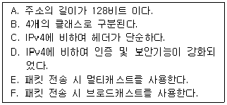

네트워크관리사-2급 (2016-10-23 기출문제)
1과목: TCP/IP
1. 호스트의 IP Address가 '201.100.5.68/28' 일 때, Network ID로 올바른 것은?
- 201.100.5.32
- 201.100.5.0
- 201.100.5.64
- 201.100.5.31
(정답률: 65%)

2. TCP가 제공하는 기능으로 옳지 않은 것은?
- 종단 간 흐름 제어를 위해 동적 윈도우(Dynamic Sliding Window) 방식을 사용한다.
- 한 번에 많은 데이터의 전송에 유리하기 때문에 화상 통신과 같은 실시간 통신에 사용된다.
- 송수신되는 데이터의 에러를 제어함으로서 신뢰성 있는 데이터 전송을 보장한다.
- Three Way Handshaking 과정을 통해 데이터를 주고받는다.
(정답률: 79%)
3. ICMP 메시지 내용으로 옳지 않은 것은?
- 호스트의 IP Address가 중복된 경우
- 목적지까지 데이터를 보낼 수 없는 경우
- 데이터의 TTL 필드 값이 '0'이 되어 데이터를 삭제 할 경우
- 데이터의 헤더 값에 오류를 발견한 경우
(정답률: 60%)
4. UDP 패킷의 헤더에 속하지 않는 것은?
- Source Port
- Destination Port
- Window
- Checksum
(정답률: 81%)
5. 인터넷의 잘 알려진 포트(Well-Known Port) 번호로 옳지 않은 것은?
- SSH - 22번
- FTP - 21번
- Telnet - 24번
- SMTP - 25번
(정답률: 88%)
6. SNMP(Simple Network Management Protocol)에서 네트워크 장치를 감시하는 요소는?
- NetBEUI
- 에이전트(Agent)
- 병목
- 로그
(정답률: 78%)
7. TCP/IP 에 대한 설명으로 옳지 않은 것은?
- TCP는 전송계층(Transport Layer)프로토콜이다.
- IP는 네트워크계층(Network Layer)의 프로토콜이다.
- TCP는 전송을 담당하고, IP는 데이터의 에러검출을 담당한다.
- Telnet과 FTP는 모두 TCP/IP 프로토콜이다.
(정답률: 73%)
8. IP Header Fields에 대한 내용 중 옳지 않은 것은?
- Version - 4bits
- TTL - 16bits
- Type of Service - 8bits
- Header Checksum - 16bits
(정답률: 74%)
9. IP Address '128.10.2.3'을 바이너리 코드로 전환한 값은?
- 11000000 00001010 00000010 00000011
- 10000000 00001010 00000010 00000011
- 10000000 10001010 00000010 00000011
- 10000000 00001010 10000010 00000011
(정답률: 88%)
10. IGMP 쿼리 메시지는 ( A )에서 ( B )로 보내지는 메시지이다. 빈칸에 해당하는 것은?
- A-호스트, B-호스트
- A-호스트, B-라우터
- A-라우터, B-호스트
- A-라우터, B-라우터
(정답률: 60%)
11. IP 데이터그램 전달을 위한 주소 형태 중 IPv4와 비교하여 IPv6에서만 제공되는 서비스는?
- Unicasting
- Multicasting
- Broadcasting
- Anycasting
(정답률: 67%)
12. ARP와 RARP에 대한 설명 중 옳지 않은 것은? (문제 오류로 실제 시험에서는 가, 라번이 정답 처리 되었습니다. 여기서는 가번을 누르면 정답 처리 됩니다.)
- ARP와 RARP는 전달 계층(Transport Layer)에서 동작하며 인터넷 주소와 물리적 하드웨어 주소를 변환하는데 관여한다.
- ARP는 IP 데이터그램을 정확한 목적지 호스트로 보내기 위해 IP에 의해 보조적으로 사용되는 프로토콜이다.
- RARP는 로컬 디스크가 없는 네트워크상에 연결된 시스템에 사용된다.
- RARP는 브로드캐스팅을 통해 해당 네트워크 주소에 대응하는 하드웨어의 실제 주소를 얻는다.
(정답률: 75%)
13. 서브넷 마스크(Subnet Mask)에 대한 설명 중 올바른 것은?
- IP Address에서 Network Address와 Host Address를 구분하는 기능을 수행한다.
- 하나의 Network를 두 개 이상의 Network로 나눌 수 없다.
- IP Address는 효율적으로 관리하나 트래픽 관리 및 제어가 어렵다.
- 불필요한 브로드캐스트 메시지를 제한할 수 없다.
(정답률: 83%)
14. DNS에 대한 설명 중 올바른 것은?
- 인터넷의 도메인 이름과 같은 형식으로 IP Address에 대한 이름을 지정한다.
- 네트워크의 구성원에 패킷을 보내기 위한 하드웨어 주소를 정한다.
- TCP/IP 프로토콜의 IP에서 접속 없이 데이터의 전송을 수행하는 기능을 규정한다.
- IP 주소를 중앙에서 관리 할 수 있도록, 클라이언트에게 IP 주소와 서브넷 마스크 같은 정보를 동적으로 할당한다.
(정답률: 70%)
15. TCP/IP 에서 데이터 링크층의 데이터 단위는?
- 메시지
- 세그먼트
- 데이터그램
- 프레임
(정답률: 82%)
16. IP의 체크섬(Checksum)에 대한 설명으로 올바른 것은?
- IP Header의 완전성을 검사한다.
- IP Header와 데이터의 완전성을 검사한다.
- 데이터의 완전성을 검사한다.
- TCP 계층에서만 체크섬 계산 및 검증 서비스가 제공된다.
(정답률: 47%)
17. TFTP에 대한 설명 중 옳지 않은 것은?
- 시작지 호스트는 잘 받았다는 통지 메시지가 올 때까지 버퍼에 저장한다.
- 중요도는 떨어지지만 신속한 전송이 요구되는 파일 전송에 효과적이다.
- 모든 데이터는 512바이트로 된 고정된 길이의 패킷으로 되어 있다.
- 보호등급을 추가하여 데이터 스트림의 위아래로 TCP 체크섬이 있게 한다.
(정답률: 46%)
2과목: 네트워크 일반
18. OSI 7 Layer를 하위 계층에서 상위 계층으로 순서대로 바르게 나열한 것은?
- 물리 → 데이터 링크 → 전송 → 네트워크 → 세션 → 표현 → 응용
- 데이터 링크 → 물리 → 전송 → 네트워크 → 세션 → 응용 → 표현
- 전송 → 데이터 링크 → 네트워크 → 물리 → 세션 → 표현 → 응용
- 물리 → 데이터 링크 → 네트워크 → 전송 → 세션 → 표현 → 응용
(정답률: 87%)
19. 프로토콜의 기본적인 기능 중, 정보의 신뢰성을 부여하는 것으로, 데이터를 전송한 개체가 보낸 PDU(Protocol Data Unit)에 대한 애크널러지먼트(ACK)를 특정시간 동안 받지 못하면 재전송하는 기능은?
- Flow Control
- Error Control
- Sequence Control
- Connection Control
(정답률: 69%)
20. MAC방식으로 라운드 로빈기법을 사용하는 방식은?
- CSMA/CD
- Token Ring
- CSMA
- DQDB
(정답률: 60%)
21. 아래 내용에서 IPv6의 일반적인 특징만을 나열한 것은?

- A, B, C, D
- A, C, D, E
- B, C, D, E
- B, D, E, F
(정답률: 86%)
22. PCM 변조 과정에 해당 되지 않는 것은?
- 세분화
- 표본화
- 양자화
- 부호화
(정답률: 90%)
23. 에러 검출(Error Detection)과 에러 정정(Error Correction)기능을 모두 포함하는 기법으로 옳지 않은 것은?
- 검사합(Checksum)
- 단일 비트 에러 정정(Single Bit Error Correction)
- 해밍코드(Hamming Code)
- 상승코드(Convolutional Code)
(정답률: 48%)
24. 다중화(Multiplexing)의 장점으로 옳지 않은 것은?
- 전송 효율 극대화
- 전송설비 투자비용 절감
- 통신 회선설비의 단순화
- 신호처리의 단순화
(정답률: 67%)
25. 트랜스포트 계층의 주된 기능에 해당하는 것은?
- 망 종단 간 데이터의 전달
- 링크 간 프레임 전송
- 노드 간 패킷 전송
- 물리매체에 비트 열 전송
(정답률: 65%)
26. 너무 많은 패킷이 서브넷 상에 존재하여 전송 속도를 저하시키는 것을 혼잡(Congestion)이라고 한다. 다음 중 혼잡이 더욱 가중되어 패킷이 더 이상 움직이지 못하는 상태를 뜻하는 것은?
- Multipath
- Datagram
- Preallocation
- Deadlock
(정답률: 84%)
27. IEEE 표준안 중 CSMA/CA에 해당하는 표준은?
- 802.1
- 802.2
- 802.3
- 802.11
(정답률: 74%)
3과목: NOS
28. Windows Server 2008 R2에서 'netstat' 명령으로 표시되지 않는 IPv4 통계정보는?
- IP
- TCP
- UDP
- NNTP
(정답률: 76%)
29. Linux 시스템에서 RPM 패키지 설치시 기존 파일에 강제적으로 설치하고자 할 때 사용하는 옵션은?
- --nodeps
- --noreplacefiles
- --force
- --defaultpackage
(정답률: 63%)
30. Linux에서 사용자가 현재 작업 중인 디렉터리의 경로를 절대경로 방식으로 보여주는 명령어는?
- cd
- man
- pwd
- cron
(정답률: 82%)
31. Linux에서 사용되는 'free' 명령어에 대한 설명 중 올바른 것은?
- 사용 중인 메모리, 사용 가능한 메모리 용량을 알 수 있다.
- 패스워드 없이 사용하는 유저를 알 수 있다.
- 디렉터리의 사용량을 알 수 있다.
- 사용 가능한 파일 시스템의 양을 알 수 있다.
(정답률: 82%)
32. Linux에서 파티션 Type이 'SWAP' 일 경우의 의미는?
- Linux가 실제로 자료를 저장하는데 사용되는 파티션이다.
- Linux가 네트워킹 상태에서 쿠키를 저장하기 위한 파티션이다.
- 메모리가 부족할 경우 하드 디스크의 일부분을 마치 메모리인 것처럼 사용하는 파티션이다.
- Utility 프로그램을 저장하는데 사용되는 파티션이다.
(정답률: 83%)
33. Linux 시스템에서 데몬(Daemon)에 관한 설명 중 옳지 않은 것은?
- 백그라운드(Background)로 실행된다.
- 'ps afx' 명령어를 실행시켜보면 데몬 프로그램의 활동을 확인할 수 있다.
- 시스템 서비스를 지원하는 프로세스이다.
- 시스템 부팅 때만 시작될 수 있다.
(정답률: 83%)
34. Linux 시스템에서 특정 파일의 권한이 '-rwxr-x--x' 이다. 이 파일에 대한 설명 중 옳지 않은 것은?
- 소유자는 읽기 권한, 쓰기 권한, 실행 권한을 갖는다.
- 소유자와 같은 그룹을 제외한 다른 모든 사용자는 실행 권한만을 갖는다.
- 이 파일의 모드는 '751' 이다.
- 동일한 그룹에 속한 사용자는 실행 권한만을 갖는다.
(정답률: 72%)
35. Windows Server 2008 R2의 백업에 관한 설명으로 옳지 않은 것은?
- 완전 서버 백업(bare-metal backup)이 가능하다.
- 다른 하드웨어에 서버를 복구 할 수 있다.
- 자기 테이프 백업을 지원한다.
- 네트워크 공유나 로컬하드드라이브의 백업을 지원한다.
(정답률: 69%)
36. DNS 데이터베이스 레코드의 유형 중 연결이 옳지 않은 것은?
- MX - 메일 교환기 호스트의 메시지 라우팅을 제공한다.
- A - 호스트 이름을 IPv4 주소로 매핑한다.
- CNAME - 주소를 호스트이름으로 매핑한다.
- NS - 이름 서버를 나타낸다.
(정답률: 68%)
37. Linux 시스템의 기본 디렉터리에 대한 설명으로 옳지 않은 것은?
- /etc : 시스템 설정과 관련된 파일이 저장된다.
- /dev : 시스템의 각종 디바이스에 대한 드라이버들이 저장된다.
- /var : 시스템에 대한 로그와 큐가 쌓인다.
- /usr : 각 유저의 홈 디렉터리가 위치한다.
(정답률: 76%)
38. Linux에서 네임서버와 관련된 설정파일과 그 설명이 잘못 연결된 것은?
- /etc/init.d/named - 네임서버 데몬을 띄워주는 init 스크립트 파일
- /etc/named.conf - 존(zone) 설정 파일
- /etc/rndc.key - 공유키 설정파일
- /var/named/named.ca - 루트네임서버 캐시파일
(정답률: 58%)
39. Windows Server 2008 R2의 서버관리자를 이용하여 IIS(Internet Information Server)로 설정할 수 있는 서비스로 짝지어진 것은?
- HTTP, FTP
- DHCP, DNS
- HTTP, DHCP
- HTTP, TELNET
(정답률: 65%)
40. Windows Server 2008 R2의 FTP Server 설정에 관한 설명으로 옳지 않은 것은?
- FTP 방화벽 지원 - 외부 방화벽에 대해 패시브 연결을 수락할지에 대해 서버를 구성할 수 있다.
- FTP 메시지 - 사용자 지정 환영메시지, 종료메시지, 그리고 추가적인 연결이 사용가능하지 않아 사용자를 거부했을 때의 메시지 설정이 가능하다.
- FTP 사용자 격리 - 다른 사용자의 FTP 홈 디렉터리에 대한 접근을 막을 수 있게 한다.
- FTP SSL 설정 - FTP 사이트 생성 시에 연결한 SSL 설정을 확인하는 기능으로 한 번만 수정할 수 있다.
(정답률: 77%)
41. Windows Server 2008 R2의 VPN(Virtual Private Networks)에 관한 설명으로 옳지 않은 것은?
- VPN을 사용하기 위해서는 최소 두 개의 IP가 필요하다.
- 서버관리자의 GUI 환경에서는 [서버 역할 - 네트워크 정책 및 액세스 - 라우팅 및 원격 액세스 서비스 - 원격 액세스 탭] 순으로 접근하여 설치한다.
- 클라이언트는 VPN에 한번 접속하면 VPN 연결을 통하지 않고도 내부 네트워크에 접근이 가능하다.
- Gateway-to-Gateway VPN은 두 개의 VPN 서버가 공용 네트워크상에서 연결된다.
(정답률: 78%)
42. Windows Server 2008 R2의 원격 데스크톱 서비스에 대한 설명으로 옳지 않은 것은?
- 원격 데스크톱 서비스를 설치하지 않더라도 관리용 원격 데스크톱을 통해 최대 5명까지 동시접속이 가능하다.
- 원격 데스크톱 세션 호스트 서버로 구성해 운영하려면 라이선스가 필요하다.
- 네트워크 레벨 인증 시 접속하는 PC는 최소 Windows XP 서비스팩2 이상의 운영체제이어야 한다.
- 인터넷을 통해서도 원격 데스크톱 서비스를 받으려면 원격 데스크톱 게이트웨이를 설치해야 한다.
(정답률: 64%)
43. Windows Server 2008 R2에서 DHCP 서버 구성 시 옳은 것은?
- 특정 호스트에게 항상 같은 IP 주소를 부여하려면 그 호스트의 이름이 필요하다.
- 특정 호스트에게 IP 주소 부여를 허가하거나 거부하려면 해당 호스트의 MAC 주소가 필요하다.
- 클라이언트가 도메인 이름 조회를 할 수 있게 하려면 WINS 서버를 지정한다.
- DHCPv6 클라이언트가 DHCP 서버로부터 IPv6 주소를 얻기 원한다면 상태 비저장 모드를 사용한다.
(정답률: 61%)
44. Windows Server 2008 R2의 Hyper-V의 스냅숏(Snapshot)에 관한 설명으로 옳지 않은 것은?
- 스냅숏은 가상컴퓨터의 특정 시점이다.
- 스냅숏의 내용은 가상디스크, 메모리, 프로세스, 구성을 모두 포함한다.
- 스냅숏은 가상 컴퓨터를 복사하는 기술이다.
- 하나의 가상컴퓨터에 여러 개의 스냅숏을 만들 수 있다.
(정답률: 72%)
45. Windows Server 2008 R2에서 보안 템플릿을 시스템에 적용하기 전에 만일을 위해 롤백 템플릿을 생성하고자 한다. 그런데 롤백 템플릿을 통해서도 이전 상태로 되돌아갈 수 없는 항목은?
- 파일시스템과 레지스트리
- 계정 정책
- 시스템 서비스
- 제한된 그룹
(정답률: 66%)
4과목: 네트워크 운용기기
46. 라우터(Router)에 대한 설명으로 올바른 것은?
- 물리적인 주소를 참조하여 데이터 패킷을 Forwarding 한다.
- 네트워크 세그먼트의 길이를 확장하여 하나의 충돌영역을 갖는다.
- 신호나 커넥터의 연결 형태를 다른 형태로 바꾸어 주는 장비이다.
- 패킷 전송 시 논리적인 주소인 IP Address를 기초로 하고 OSI 참조모델 중 3계층 장비이다.
(정답률: 69%)
47. 리피터(Repeater)를 사용해야 될 경우로 올바른 것은?
- 네트워크 트래픽이 많을 때
- 세그먼트에서 사용되는 액세스 방법들이 다를 때
- 데이터 필터링이 필요할 때
- 신호를 재생하여 전달되는 거리를 증가시킬 필요가 있을 때
(정답률: 86%)
48. 다음 전송 매체 중 신호 전달 거리가 길고, 속도가 가장 빠른 것은?
- 꼬임선
- 동축케이블
- 광섬유
- 2-선식 개방 선로
(정답률: 91%)
49. 다음 중 라우터에서 경로를 찾는데 사용되는 라우팅 프로토콜의 종류로 옳지 않은 것은?
- RIP
- OSPF
- IPX
- EIGRP
(정답률: 64%)
50. 다음 RAID(Redundant Array of Independent Disks)의 레벨에 대한 설명 중 올바른 것은?
- RAID 0 - 디스크 스트라이핑을 지원한다. 데이터의 중복저장을 제공하지 않지만, 오류허용을 위한 기능은 지원한다.
- RAID 1 - 미러링을 지원한다. 쌍으로 이루어진 디스크에 복제된 데이터가 중복 저장되어, 컨트롤러는 쓰기시에 단일 드라이브를 사용하는 것 보다 효율적인 방법으로 부하를 분산시킨다.
- RAID 3 - 전용 패리티 드라이브를 통하여 디스크 스트라이핑과 완벽한 데이터 중복을 지원한다. 패리티를 통하여 낮은 비용으로 효율적인 데이터 중복저장을 구현했으며, RAID 1 보다 성능이 뛰어나다.
- RAID 5 - 모든 드라이브와 교차하는 디스크 스트라이핑을 지원한다. 분산된 패리티로 인하여 동시에 작은 I/O 트랜잭션을 갖는 네트워크에 적당하다.
(정답률: 37%)
따라서, 201.100.5.68/28의 네트워크 ID는 201.100.5.64입니다. 이는 서브넷 마스크의 28비트가 모두 1이기 때문에 호스트 ID가 모두 0이 되기 때문입니다. 따라서, 올바른 Network ID는 "201.100.5.64"입니다.